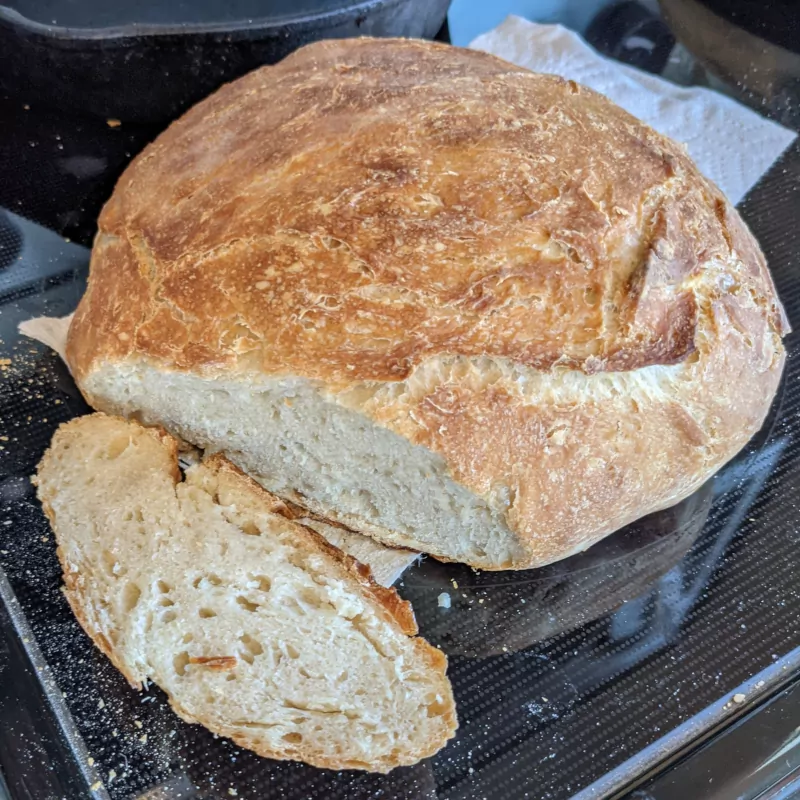
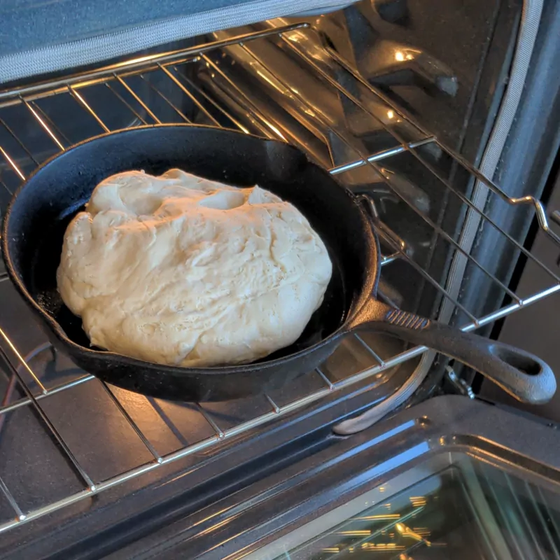

No-knead Bread

- ⏲️ Prep time: 13 h
- 🍳 Cook time: 50 m
- 🍽️ Servings: 8-12 slices
Ingredients
- 3 c flour
- 1 + ¼ tbsp salt
- ¼ tsp instant yeast or 1.25/4 tsp active dry yeast
- 1 + ½ + 1/8 cups hot water
- Oven-safe pan
Directions
- Mix the dry ingredients then add the hot water. It should come out as a firm dough.
- Leave the dough at room temperature for 12 hours. 
- Preheat oven and pan to 450 F.
- Bake for 30 minutes covered (e.g. aluminum foil), then 20 minutes uncovered.